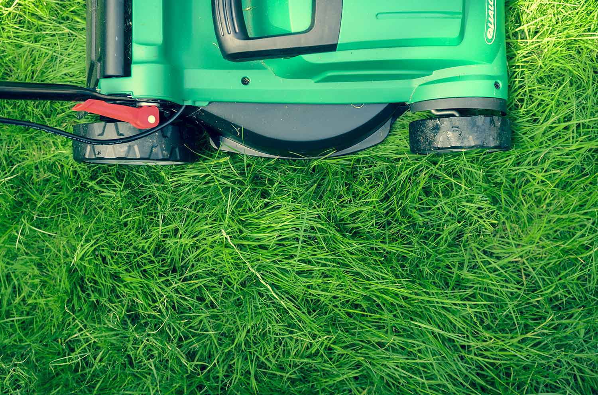

L'entretien du gazon au printemps
Conseils
Entretien du jardin
Gazon
Par Olivier Ribera
Le printemps est une saison clé pour l'entretien de votre gazon. Les plantes sont alors en pleine croissance, ce qui est idéal pour aider votre pelouse à se remettre de l'hiver. Assisté par la nature, son entretien au printemps produira des résultats tout au long de l'année.
Nettoyer et préparer votre sol
Si votre gazon a été jusque-là régulièrement entretenu, tout ce que vous devrez faire sera de réaliser une première tonte de saison une fois que le sol aura séché. Cependant, des problèmes tels qu'une invasion de mousse devront être rapidement résolus, car ils pourront fragiliser votre pelouse et la rendre plus sensible aux mauvaises herbes et aux maladies.
Un problème habituel est un terrain inégal, où existent trous et bosses, les uns entraînant un mauvais draînage du sol, tandis que les autres sont souvent "scalpées" par la tondeuse à gazon. Ces situations créant de mauvaises conditions de croissance pour l'herbe, prenez une pelle et découpez les zones de terre qui sont soulevées, puis remplissez celles qui en manquent.
Un autre problème, en particulier dans les zones à piétinement répété, est le compactage du sol. Cela se produit lorsque le sol devient trop dur ou dense, rendant difficile pour l'herbe de prendre racine, ou empêchant eau et éléments nutritifs de s'infiltrer dans le sol. Les mauvaises herbes, plus résistantes, prendront alors le dessus. Pour tester votre terrain, plantez simplement une bêche dans le sol. Si les dents ne parviennent pas à y pénétrer d'environ 5 centimètres, votre sol est compacté et devra être aéré.
Même si votre sol est convenablement préparé, vous pouvez toujours avoir un problème de mousse, aussi appelé chaume, qui est la couche d'herbes mortes et de feutre végétal se développant et stagnant entre la zone de végétation et la surface du sol. Dans les cas les plus problématiques, un tapis trop épais de mousse empêchera l'eau et les nutriments d'atteindre le sol et votre gazon perdra en résistance, au risque de dépérir. Pour y rémédier, la scarification de votre gazon, qui consiste en un ratissage mécanique, est indispensable, et préconisé deux fois par an, au printemps ainsi qu'à l'automne avant les premières gelées.
Réparer votre gazon
Une fois que vous aurez nettoyé et préparé au mieux votre sol, vous voudrez peut-être effectuer en ce début de printemps un sursemis sur votre gazon pour vous aider à combler les zones trop clairsemées ou abîmées. Si cela améliorera considérablement son apparence générale, il y a néanmoins quelques étapes simples que nous vous conseillons de suivre pour vous assurer que votre gazon n'ait pas après vos efforts moins bonne mine encore qu'avant !
Il s'agit en premier lieu d'essayer de traiter votre sol des conditions qui pourront jusqu'ici avoir empêché votre herbe de pousser convenablement. Contactez votre spécialiste du jardin qui sera capable de vous dire, après avoir éventuellement testé votre sol, de quels éléments nutritifs celui-ci manque. Une fois corrigé au besoin la composition de votre sol, une bonne aération évitera tout problème de compactage.
Vous êtes désormais prêt à acheter votre gazon et à semer. Mais avant de choisir vos semences, il vous faut déterminer quelle variété de graminées sera la plus adaptée à votre région ainsi qu'aux caractéristiques d'exposition de votre terrain. Pelouse d'ornement, pelouse de détente et d'agrément ou dit "sport et jeux" capable de résister au piétinement et à l'arrachage... Vous devrez également choisir comment vous souhaitez profiter de votre gazon.
Une fois planté, ne négligez pas votre gazon. Arrosez régulièrement pour maintenir une bonne humidité du sol et fertilisez avec un engrais à libération lente et en basse teneur en azote. Tondez lorsque l'herbe aura atteint 8 ou 10 centimètres de hauteur, mais toujours sans couper plus de 1/3 de sa hauteur.
Fertiliser votre gazon
Une fois que votre gazon est bien établi, vous pourrez à la fois encourager sa croissance et décourager les mauvaises herbes en appliquant une combinaison d'engrais et d'herbicides. Savoir quand répandre ces substances et dans quelles proportions ou mesures dépendra de plusieurs facteurs, en particulier de l'étendue de votre problème avec les mauvaises herbes.
Si fertiliser votre gazon peut l'aider à grandir et à rester en bonne santé, un emploi non adapté d'engrais peut néanmoins avoir comme conséquence d'endommager l'herbe. Un engrais garantissant une libération lente et longue durée de l'azote contenu est préférable, pour assurer une enracinement plus vigoureux ainsi qu'un (re)verdissement durable de votre gazon. Il doit être appliqué au début de la saison, au moment où le gazon commence sa croissance active.
Les herbicides également doivent être utilisés raisonnablement et avec précaution, car leur efficacité dépendra de la façon dont ils sont utilisés. Si vous avez une véritable invasion de mauvaises herbes, nous vous conseillons d'utiliser et appliquer un herbicide de pré-levée sur votre gazon avant que les graines ne germent au printemps. Sachez cependant que vous ne pourrez pas utiliser ce traitement si vous prévoyez de planter de l'herbe nouvelle, car l'herbicide empêchera également les semences de gazon de germer. Pour des problèmes plus isolés, un traitement localisé à l'aide d'un herbicide non-sélectif sera généralement suffisant. Et n'oubliez pas que la meilleure façon de décourager les mauvaises herbes est d'avoir un gazon régulièrement entretenu, dense et en bonne santé.
Tondre votre gazon
Vous serez peut-être surpris de savoir qu'il s'agit bien plus que de mettre votre tondeuse en route et de la guider à travers votre jardin ! Car la hauteur de coupe ainsi que la fréquence des tontes sont importants pour la bonne santé de votre gazon.
Bien que cela puisse significativement réduire le nombre de fois où vous devrez tondre, couper l'herbe trop court est à long terme nocif pour votre gazon. Une tonte réalisée à une trop courte hauteur de lame va faire perdre à votre gazon une partie de ses réserves en éléments nutritifs et exposer le sol à la lumière du soleil, permettant aux mauvaises herbes de se développer plus facilement. Une herbe plus haute est plus en mesure de concurrencer les mauvaises herbes, grâce à un système racinaire plus large et une plus grande tolérance à la chaleur. Maintenu à une bonne hauteur, votre gazon abritera également le sol du soleil, ce qui lui permettra de retenir l'eau plus efficacement.
Notre conseil est de tondre votre gazon assez souvent pour que vous n'ayez jamais à couper plus d'un tiers de sa hauteur.
Le savez-vous ?
La tonte comme les autres travaux d’entretien de votre gazon (scarification, traitements et apports d’engrais, valorisation des déchets verts) constituent des travaux d'entretien de jardin pouvant être réalisés dans le cadre avantageux des "Services à la personne". Pour profiter à fois des services d'un professionnel du jardin et des réductions fiscales en vigueur, demandez-nous conseil en nous contactant au 06 66 33 11 33 ou via notre page de contact.
Partager avec vos amis
Article recommandé
8 choses à ne pas faire à votre gazon
À quel moment de la journée choisir plutôt de tondre ? Et comment arroser votre pelouse pour garder celui-ci en bonne santé ? Quel usage faire des herbicides ou pesticides ? (...)
Lire l'articleRecevez de nos nouvelles !
Inscrivez-vous dès maintenant et recevez nos actualités et offres de services exclusives, ainsi que nos derniers articles et conseils d'aménagements et d'entretien de jardin.